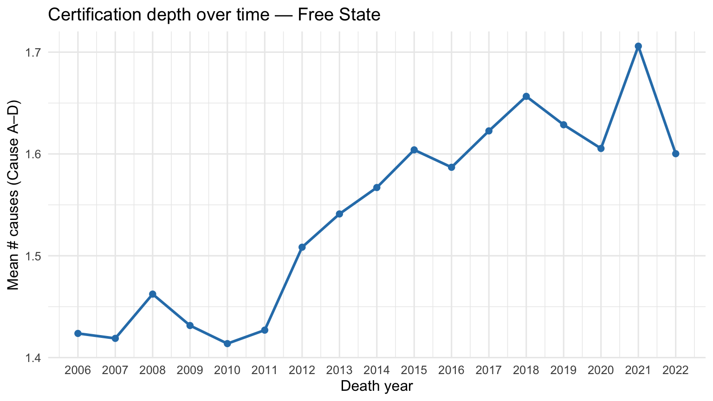
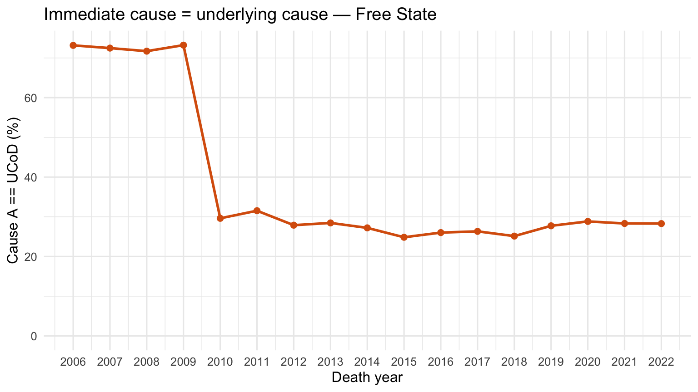
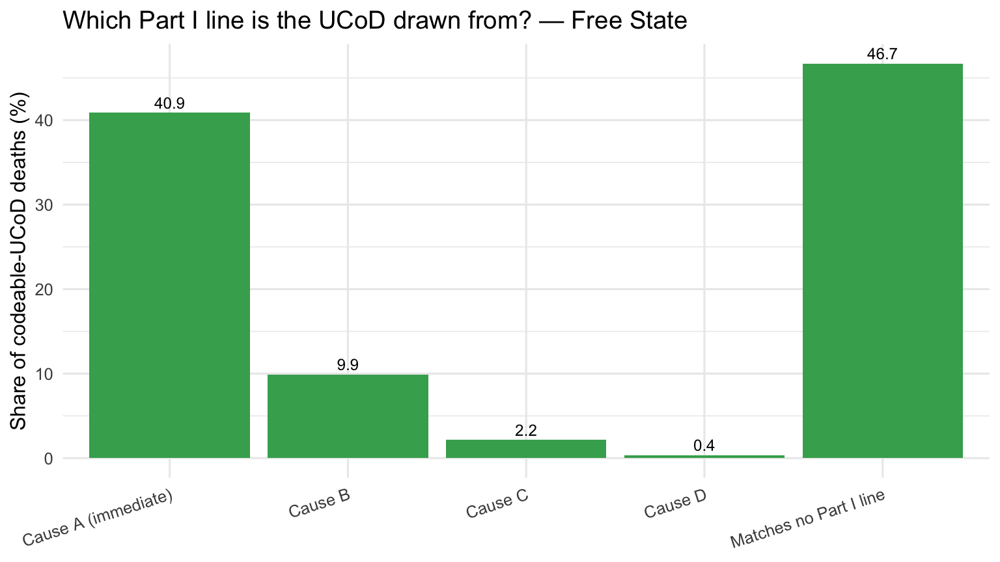
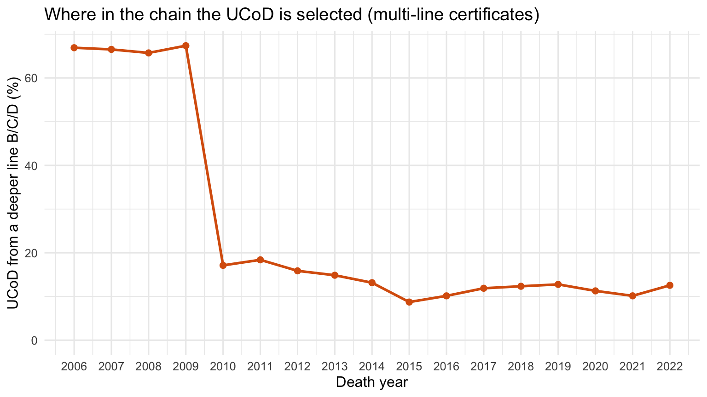
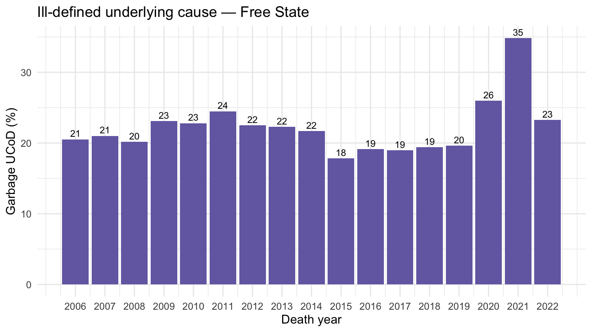
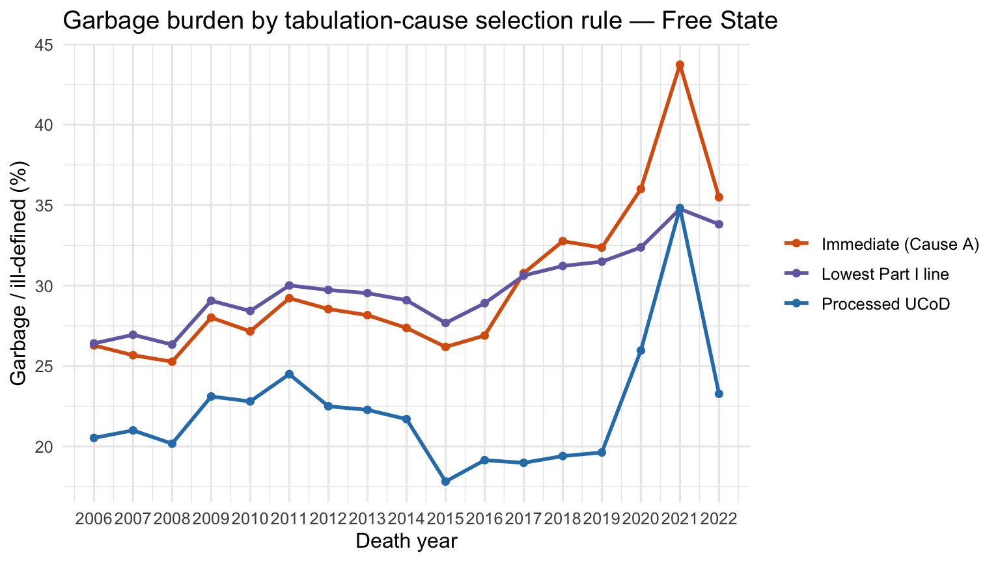
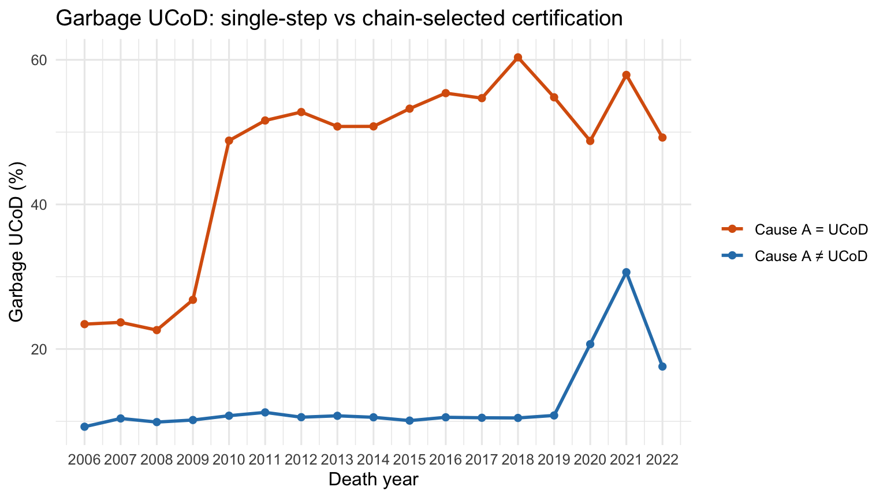
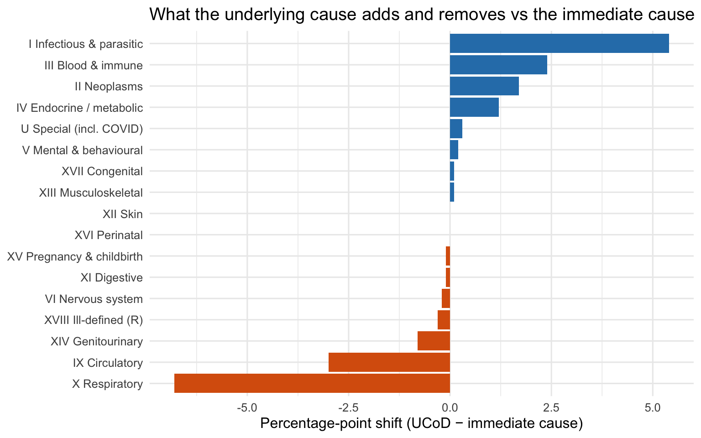
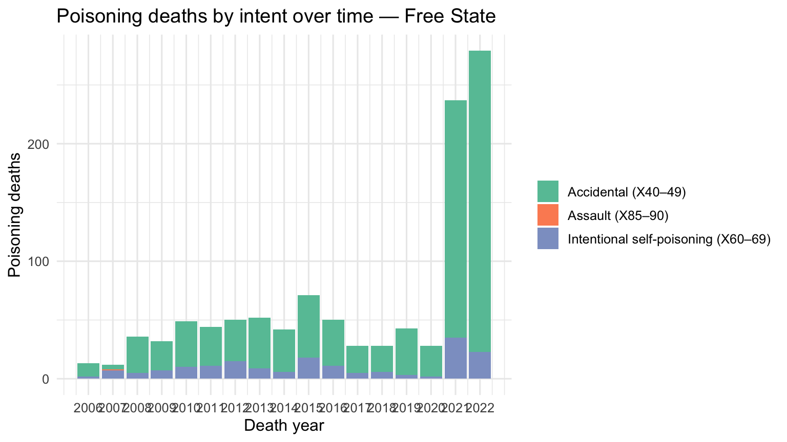

| Year | Deaths | Cause A (%) | Cause B (%) | Cause C (%) | Cause D (%) | UCoD (%) |
|---|---|---|---|---|---|---|
| 2006 | 53544 | 100.0 | 36.1 | 10.3 | 2.4 | 97.5 |
| 2007 | 52341 | 99.9 | 36.9 | 9.9 | 2.1 | 97.3 |
| 2008 | 50531 | 100.0 | 39.1 | 11.5 | 2.5 | 97.2 |
| 2009 | 48566 | 100.0 | 36.1 | 11.4 | 2.6 | 97.3 |
| 2010 | 46485 | 100.0 | 35.5 | 10.8 | 2.5 | 96.8 |
| 2011 | 41973 | 100.0 | 36.7 | 11.3 | 2.5 | 96.8 |
| 2012 | 36219 | 100.0 | 41.2 | 14.9 | 4.0 | 96.8 |
| 2013 | 34514 | 100.0 | 43.4 | 16.1 | 4.3 | 96.7 |
| 2014 | 34305 | 100.0 | 44.6 | 17.2 | 4.7 | 96.6 |
| 2015 | 33534 | 100.0 | 46.4 | 18.9 | 5.5 | 100.0 |
| 2016 | 33309 | 100.0 | 46.5 | 17.9 | 4.8 | 100.0 |
| 2017 | 32879 | 100.0 | 47.4 | 19.8 | 5.7 | 100.0 |
| 2018 | 30938 | 100.0 | 48.8 | 21.6 | 6.5 | 100.0 |
| 2019 | 32408 | 100.0 | 47.9 | 20.1 | 5.9 | 100.0 |
| 2020 | 32929 | 100.0 | 47.7 | 20.1 | 1.4 | 100.0 |
| 2021 | 40803 | 100.0 | 50.2 | 21.9 | 7.2 | 100.0 |
| 2022 | 31803 | 100.0 | 45.1 | 20.1 | 6.1 | 100.0 |
Free State Cause-of-Death Coding Quality
From multiple-cause certification (Cause A–D) to the WHO underlying cause of death (UCoD)
data-quality
cause-of-death
multiple-causes
UCoD
WHO
IRIS
DoRIS
free-state
Data-quality assessment of the Part I cause lines and the derived underlying cause in the Isibalo/MACOD microdata, using the Free State province as a worked example, with implications for automated coding (IRIS / DoRIS).
1 Why this matters
Every death certificate in the South African civil-registration system records a sequence of causes in Part I of the medical certificate (the “Cause A → B → C → D” chain), plus contributing conditions in Part II. From that free sequence a single underlying cause of death (UCoD) is derived — the condition that, per the WHO definition, “initiated the train of morbid events leading directly to death” (ICD-10, Volume 2). The UCoD is what almost every published mortality statistic, cause-specific rate, and excess-mortality model ultimately uses.
The quality of that single UCoD is therefore only as good as (a) the underlying Cause A–D certification, and (b) the rule engine that selects the UCoD from it. This page profiles both, using the Free State province (667,081 deaths, 2006–2022) from the Isibalo/MACOD microdata as a worked, reproducible example.
NoteFree State as the worked example
The Free State subset is built by data/macod_isibalo/build_free_state.R from the canonical MACOD dataset (load_macod.R). “Free State” here means place of death (StatsSA province code 4). All metrics below recompute directly from free_state_mortality.feather, so the page re-renders as the data is refreshed.
2 1. Completeness of the Cause A–D lines
The first quality question is simply: is each cause line populated?
Reading this table. Cause A and the UCoD are essentially always present — that is expected, because a certificate with no immediate cause cannot be processed. The steep fall-off from Cause A → B → C → D is not missingness in the error sense: it reflects how many steps of the causal chain the certifier actually wrote. A certificate that legitimately has a single cause will show Cause A only. The diagnostic concern is the opposite extreme — an implausibly high share of single-line certificates (see §2).
WarningThe
888 / 000 placeholder trap
In the raw StatsSA files, empty cause lines are not blank — they are filled with sentinel tokens such as 888 (“no further cause”) and 000. A naïve is.na() or nchar() > 0 completeness check counts these as populated, inflating apparent multiple-cause depth to ~100%. Here they are stripped to NA before any counting (SENTINELS in the setup chunk). Any downstream analysis of Cause B–D must do the same or it will badly over-count comorbidity.
3 2. Multiple-cause depth (how rich is the certification?)
| Real codes in Part I | Deaths | Share (%) |
|---|---|---|
| 0 | 49098 | 7.4 |
| 1 | 341814 | 51.2 |
| 2 | 176405 | 26.4 |
| 3 | 75185 | 11.3 |
| 4 | 24579 | 3.7 |

Interpretation. Around 58.6% of Free State certificates carry at most one genuine cause code, and 7.4% carry none that pass the ICD-format check (these are dominated by ill-defined R codes — see §5). Mean depth rises gradually across the series, which is the desired direction: more complete causal chains give the UCoD-selection rules more to work with. A flat or falling line, or a province stuck near “1 cause”, is a red flag for thin certification — the certifier writing only the mode of death.
4 3. Cause A vs the underlying cause — the structural break
If Cause A (the immediate cause) frequently equals the UCoD, the certificate is effectively single-step: no causal reasoning has been encoded. Tracking Cause A == UCoD over time is one of the most revealing QC signals in this dataset.

ImportantA discontinuity that is an artefact, not an epidemiological signal
Cause A == UCoD sits around 70–73% for 2006–2009 and then collapses to ~25–30% from 2010 onward. Mortality patterns do not change that abruptly. This is the fingerprint of a change in the coding/processing pipeline (most plausibly the move toward rule-based selection of the underlying cause rather than defaulting to the first-written line). Any trend analysis that crosses 2009/2010 — including cause-specific Free State trends — must treat this as a break point and not interpret pre/post differences as real change. This is exactly the kind of issue automated coding (IRIS/DoRIS) is meant to make explicit and consistent (see §12).
5 4. Which line of the chain does the UCoD come from?
§3 reduced the comparison to a single yes/no: does the UCoD equal Cause A? But the underlying cause can legitimately be drawn from any line of the Part I chain. Under the WHO General Principle, the UCoD is the condition entered alone on the lowest used line of Part I, provided everything above it could plausibly have resulted from it. So the sharper, more general question — and the one most of this report turns on — is not “is the UCoD Cause A?” but “which of Cause A / B / C / D is the UCoD actually drawn from?”
| UCoD is identical to | Deaths | Share (%) |
|---|---|---|
| Cause A (immediate) | 245444 | 40.9 |
| Cause B | 59414 | 9.9 |
| Cause C | 12978 | 2.2 |
| Cause D | 2220 | 0.4 |
| Matches no Part I line | 280304 | 46.7 |

ImportantMost “orphan” UCoDs are granularity drift, not a broken chain
Taken literally, the UCoD is exactly identical to one of Cause A–D in only 53.3% of codeable records — and matches no Part I line in the rest, which looks alarming. But matching at the 3-character ICD block level — treating J18 on the cause line and J189 as the UCoD as the same condition — lifts traceability to 95.1%. That 41.8-percentage-point gap is pure code-granularity drift between the certified cause lines and the derived UCoD, not a severed chain. Only 4.9% of UCoDs trace to no Part I line even at block level, and almost none of those are recoverable from Part II or the injury fields. Implication: any UCoD-vs-chain reconciliation — and any IRIS/DoRIS input (§12) — must first normalise code granularity, or it will spuriously flag roughly half the records as “UCoD not in the chain”.

Interpretation. When the certificate carries a real chain (271,239 certificates with ≥2 completed Part I lines), the UCoD is drawn from a deeper line — Cause B, C or D rather than the immediate Cause A — in 27.5% of cases. That is the WHO General Principle visibly at work: the engine reaches past the immediate cause to the originating condition. But how far it reaches carries the now-familiar 2009/2010 fingerprint: deeper-line selection runs ~66% in 2006–2009, then drops to ~13–17% from 2010 onward. The rule that maps the Part I chain onto a single UCoD changed at that boundary — which is precisely why a legacy series and an IRIS-recoded series are not comparable across it (§12).
6 5. Ill-defined and “garbage” underlying causes (WHO lens)
The WHO and the Global Burden of Disease programme classify certain UCoD values as “garbage codes” — codes that are either ill-defined (the R00–R99 symptoms chapter) or that name a mode of death (e.g. cardiac arrest I46, heart failure I50, respiratory failure J96, sepsis A41) which cannot logically be an underlying cause. A high garbage-code share erodes the usefulness of cause-specific statistics.
| Year | Deaths | R99 as UCoD (%) | Any R-code (%) | Garbage UCoD (%) |
|---|---|---|---|---|
| 2006 | 53544 | 10.7 | 11.1 | 20.5 |
| 2007 | 52341 | 10.6 | 11.0 | 21.0 |
| 2008 | 50531 | 10.4 | 10.7 | 20.2 |
| 2009 | 48566 | 12.3 | 12.8 | 23.1 |
| 2010 | 46485 | 11.4 | 12.0 | 22.8 |
| 2011 | 41973 | 12.6 | 13.1 | 24.5 |
| 2012 | 36219 | 10.8 | 11.1 | 22.5 |
| 2013 | 34514 | 10.5 | 10.8 | 22.3 |
| 2014 | 34305 | 9.7 | 10.2 | 21.7 |
| 2015 | 33534 | 9.7 | 10.1 | 17.8 |
| 2016 | 33309 | 11.0 | 11.4 | 19.1 |
| 2017 | 32879 | 10.6 | 11.4 | 19.0 |
| 2018 | 30938 | 11.2 | 12.0 | 19.4 |
| 2019 | 32408 | 12.3 | 12.7 | 19.6 |
| 2020 | 32929 | 11.6 | 12.1 | 26.0 |
| 2021 | 40803 | 14.3 | 14.8 | 34.8 |
| 2022 | 31803 | 12.2 | 12.9 | 23.3 |

Interpretation. Roughly one in five Free State deaths has an ill-defined or non-specific underlying cause in a typical year, dominated by R99 (“ill-defined and unknown causes”). The share jumps sharply in 2020–2021 (peaking around 35% in 2021), consistent with pandemic-era pressure on certification and with provisional/U-coded COVID entries. For any cause-specific Free State analysis, these records either need redistribution (GBD-style) or explicit sensitivity analysis.
7 6. Three ways to pick the tabulation cause — which is cleanest?
The garbage burden in §5 was measured on the processed underlying cause. But that is only one of three candidate rules an analyst could use to choose the single cause a death is tabulated under. Each can be scored for ill-defined / garbage burden, and they do not agree:
- Immediate cause — just take Cause A, the first line written. Simplest, but it is the mode of death end of the chain.
- Lowest completed Part I line — take the deepest line the certifier filled in (Cause D if present, else C, else B, else A), as a crude proxy for “most upstream”. No selection rules applied.
- Processed UCoD (IRIS / DoRIS) — apply the WHO ICD selection and modification rules to the whole certificate. This is what the published
underlying_causerepresents, and what an IRIS/DoRIS pipeline (ICD-10 or ICD-11) would standardise.
| Selection rule | Garbage / ill-defined (%) | R-code (%) | Missing / non-ICD (%) |
|---|---|---|---|
| 1. Immediate cause (Cause A) | 29.6 | 12.1 | 7.6 |
| 2. Lowest completed Part I line | 29.5 | 11.9 | 7.4 |
| 3. Processed UCoD (IRIS/DoRIS-style) | 22.3 | 11.8 | 10.0 |

Interpretation. The three rules are not interchangeable. Taking the immediate cause leaves 29.6% garbage and taking the lowest completed line leaves 29.5% — essentially the same, and in several years the lowest line is actually worse. That is counter-intuitive until you remember the chain is often written out of order or padded: the last filled line is frequently itself a mode of death (R99, cardiac/respiratory arrest), so “go deepest” does not mean “go most upstream”. Only the rule-based processed UCoD meaningfully reduces the burden, to 22.3%, because the WHO selection/modification rules can reject an ill-defined line in favour of a specific one elsewhere on the certificate.
ImportantWhat this says about IRIS / DoRIS and ICD-10 vs ICD-11
- Automated processing earns its keep here. The ~7-point gap between the immediate cause and the processed UCoD is the value the WHO selection rules add — and it is exactly that logic IRIS/DoRIS encode reproducibly. A naive “Cause A” or “lowest line” tabulation throws that away.
- It is a floor, not a fix. Even the processed UCoD sits at 22.3% garbage. IRIS/DoRIS standardise selection; they do not invent specificity where the certificate only ever named a symptom. Garbage-code redistribution (§5) is still required afterwards.
- ICD-10 → ICD-11. Re-coding under ICD-11 (with its different chapter structure, post-coordination, and revised modes-of-death handling) is itself a fourth rule and will shift these numbers again. As with the 2009/2010 break (§3–§4), an ICD-10 series and an ICD-11 series are not directly comparable; any migration needs a dual-coded bridge period on a subset like this one.
8 7. Worked rejections: when a better UCoD beats the line written
§6 argued in aggregate that the processed UCoD carries less garbage than the immediate cause or the lowest line. This section makes that concrete by pulling real Free State certificates where the immediate cause (Cause A) is a mode of death — cardiac arrest, respiratory failure, sepsis, dehydration — and the WHO rules correctly reject it and select a specific underlying cause from elsewhere on the certificate. These are exactly the cases an IRIS/DoRIS pipeline handles automatically and a naive “Cause A” or “lowest line” tabulation gets wrong.
| Immediate cause written (Cause A) — a mode of death | Underlying cause selected instead (UCoD) | Certificates |
|---|---|---|
| E86 Volume depletion (dehydration) | A09 Infectious gastroenteritis / diarrhoea | 4,651 |
| I50 Heart failure | I11 Hypertensive heart disease | 2,217 |
| J96 Respiratory failure | J18 Pneumonia, organism unspecified | 1,775 |
| J96 Respiratory failure | A16 Respiratory tuberculosis | 1,732 |
| I46 Cardiac arrest | I10 Essential hypertension | 1,382 |
| I50 Heart failure | E14 Diabetes mellitus (unspecified) | 1,148 |
| I46 Cardiac arrest | E14 Diabetes mellitus (unspecified) | 1,084 |
| A41 Sepsis | E14 Diabetes mellitus (unspecified) | 1,022 |
| J96 Respiratory failure | J44 COPD | 731 |
| N19 Unspecified kidney failure | E14 Diabetes mellitus (unspecified) | 718 |
| E86 Volume depletion (dehydration) | D84 Immunodeficiency (HIV-associated) | 671 |
| J96 Respiratory failure | B20 HIV disease | 658 |
How to read these pairs. Every row is a place where “tabulate the immediate cause” would have recorded a non-actionable mode of death and the WHO selection rules recovered the real story:
- Dehydration → diarrhoeal disease (
E86 → A09, the single most common rejection): the patient died dehydrated, but the cause was infectious gastroenteritis. An immediate-cause count would log “volume depletion”; the UCoD correctly logs a vaccine-/WASH-preventable enteric infection. - Cardiac arrest → hypertension (
I46 → I10) and heart failure → hypertensive heart disease (I50 → I11): the heart stopping is the mode; hypertension is the modifiable underlying cause a programme would target. - Respiratory failure → pneumonia or TB (
J96 → J18/A16): “the lungs failed” versus a treatable infection — and in South Africa often TB, which has completely different surveillance implications. - Sepsis → diabetes, pneumonia, or HIV-related immunodeficiency (
A41 → E14/J18/D84): sepsis is the final common pathway; the UCoD names the chronic condition that let it happen.
| Mode of death on Cause A | Certificates rejected | Top underlying causes selected instead |
|---|---|---|
| E86 Volume depletion (dehydration) | 9,041 | A09 Infectious gastroenteritis / diarrhoea (4651); D84 Immunodeficiency (HIV-associated) (671); B33 Viral disease (343) |
| I46 Cardiac arrest | 10,756 | I10 Essential hypertension (1382); E14 Diabetes mellitus (unspecified) (1084); I64 Stroke, unspecified (531) |
| I50 Heart failure | 11,497 | I11 Hypertensive heart disease (2217); E14 Diabetes mellitus (unspecified) (1148); J18 Pneumonia, organism unspecified (647) |
| J96 Respiratory failure | 12,555 | J18 Pneumonia, organism unspecified (1775); A16 Respiratory tuberculosis (1732); J44 COPD (731) |
| A41 Sepsis | 9,470 | E14 Diabetes mellitus (unspecified) (1022); J18 Pneumonia, organism unspecified (593); D84 Immunodeficiency (HIV-associated) (463) |
| N19 Unspecified kidney failure | 5,209 | E14 Diabetes mellitus (unspecified) (718); B33 Viral disease (459); B23 HIV disease (376) |
| N18 Chronic kidney disease | 1,807 | E14 Diabetes mellitus (unspecified) (340); I12 — (248); B23 HIV disease (188) |
| R57 — | 469 | A09 Infectious gastroenteritis / diarrhoea (117); K92 — (23); I21 Acute myocardial infarction (19) |
| Part I chain as written (A → B → C → D) | UCoD selected | Certificates |
|---|---|---|
| E86 → A09 → · → · | A09 | 2,702 |
| J969 → J189 → · → · | J18 | 985 |
| I469 → I10 → · → · | I10 | 980 |
| I500 → I10 → · → · | I11 | 962 |
| I509 → I10 → · → · | I11 | 778 |
| E86 → A099 → · → · | A09 | 659 |
| J96 → J18 → · → · | J18 | 467 |
| J969 → J22 → · → · | J22 | 378 |
| J969 → A162 → · → · | A16 | 369 |
| J96 → A16 → · → · | A16 | 328 |
| A419 → J189 → · → · | J18 | 308 |
| E86 → A09 → D84 → · | A09 | 255 |
ImportantWhy this strengthens the case for rule-based UCoD selection
These are not edge cases — 68,994 certificates (10.3% of all Free State deaths) have a mode of death on the immediate line that the rules correctly override. The lowest-line rule does little better: it still leaves 16,555 certificates with a garbage deepest line that the processed UCoD improves on, because certifiers often write the mode of death last. The reproducible application of the WHO selection and modification rules — which is precisely what IRIS / DoRIS automate — is what converts “the heart stopped / the lungs failed / the patient was septic” into hypertension, pneumonia, TB, diabetes, and HIV: the causes that actually drive prevention policy. This is the mechanism behind the aggregate gap in §6.
9 8. Does Cause A == UCoD predict a garbage underlying cause?
§3 showed that a large share of certificates are single-step — Cause A is carried straight through as the UCoD, with no causal chain encoded. A natural quality question is whether those single-step certificates are also the ones most likely to produce an ill-defined / garbage UCoD. If so, Cause A == UCoD is not merely a marker of a thin chain; it is a leading indicator of low-specificity output.
To avoid a spurious result, this section is restricted to records with a codeable (real ICD-10) UCoD. A missing/sentinel UCoD can never equal Cause A by construction, so including those records would manufacture an association.
| Cause A == UCoD | Deaths | Garbage UCoD (n) | Garbage UCoD (%) |
|---|---|---|---|
| No (UCoD from deeper line) | 354869 | 46593 | 13.1 |
| Yes (single-step) | 245444 | 90296 | 36.8 |

Interpretation. Among single-step certificates (Cause A = UCoD), 36.8% carry a garbage/ill-defined UCoD, versus 13.1% where the UCoD was selected from a deeper line — a relative risk of 2.8 (95% CI 2.8–2.8; χ² p < 0.001). The mechanism is direct: when the certifier writes only a mode of death or an R-code on the first line and nothing beneath it, that single token becomes both Cause A and the UCoD. Cause A == UCoD is therefore not just a “thin chain” flag — it is a cheap, single-field data-quality KPI that can be monitored prospectively: a rising share of single-step certificates predicts a rising share of uninformative underlying causes, and the two co-spike in the 2020–2021 pandemic years.
10 9. Immediate vs underlying cause — which should drive action?
The WHO underlying cause is the standard tabulation cause and the correct denominator for primary-prevention targets and international comparability. But “the condition that initiated the chain” is not always the condition a health system could have acted on in the final illness. This section challenges the reflex of collapsing every death to a single UCoD by asking what information is discarded when we move from the immediate cause (Cause A) to the UCoD.
| Chapter | Cause A (%) | UCoD (%) | Shift (UCoD - A) |
|---|---|---|---|
| I Infectious & parasitic | 17.1 | 22.5 | 5.4 |
| IX Circulatory | 20.9 | 17.9 | -3.0 |
| X Respiratory | 21.9 | 15.1 | -6.8 |
| XVIII Ill-defined (R) | 13.4 | 13.1 | -0.3 |
| IV Endocrine / metabolic | 5.5 | 6.7 | 1.2 |
| II Neoplasms | 4.9 | 6.6 | 1.7 |
| III Blood & immune | 1.8 | 4.2 | 2.4 |
| XVI Perinatal | 3.9 | 3.9 | 0.0 |
| XI Digestive | 2.9 | 2.8 | -0.1 |
| VI Nervous system | 2.5 | 2.3 | -0.2 |
| XIV Genitourinary | 2.7 | 1.9 | -0.8 |
| U Special (incl. COVID) | 1.3 | 1.6 | 0.3 |
| V Mental & behavioural | 0.2 | 0.4 | 0.2 |
| XVII Congenital | 0.3 | 0.4 | 0.1 |
| XIII Musculoskeletal | 0.2 | 0.3 | 0.1 |
| XII Skin | 0.2 | 0.2 | 0.0 |
| XV Pregnancy & childbirth | 0.3 | 0.2 | -0.1 |
| VII–VIII Eye & ear | 0.0 | 0.0 | 0.0 |

| Underlying cause chapter | UCoD deaths | Most common immediate causes (Cause A chapter) |
|---|---|---|
| I Infectious & parasitic | 134,690 | I Infectious & parasitic — 67%; X Respiratory — 14%; IV Endocrine / metabolic — 6% |
| IX Circulatory | 107,159 | IX Circulatory — 86%; X Respiratory — 7%; XIV Genitourinary — 2% |
| X Respiratory | 90,437 | X Respiratory — 89%; IX Circulatory — 6%; I Infectious & parasitic — 1% |
| XVIII Ill-defined (R) | 78,527 | XVIII Ill-defined (R) — 97%; IX Circulatory — 2%; U Special (incl. COVID) — 1% |
| IV Endocrine / metabolic | 40,057 | IV Endocrine / metabolic — 45%; IX Circulatory — 27%; X Respiratory — 12% |
| II Neoplasms | 39,421 | II Neoplasms — 72%; X Respiratory — 9%; IX Circulatory — 7% |
What the data show. In 24.2% of Free State deaths the immediate cause and the UCoD fall in different ICD chapters — moving to the UCoD changes the clinical story, not just the code. The shift is systematic (chart above): the UCoD up-weights I Infectious & parasitic while the immediate cause retains weight in X Respiratory and the other mode-of-death / ill-defined / respiratory chapters. The transition table makes the point concrete: chronic underlying causes are reached through a small set of treatable proximate conditions (infections, respiratory failure, ill-defined collapse).
ImportantThe case for not collapsing everything to the UCoD
The UCoD and the immediate cause answer different action questions:
- UCoD → “what should we prevent?” It points upstream to the modifiable risk (hypertension, HIV, diabetes, tobacco) and is the right basis for primary-prevention policy and inter-country comparison.
- Immediate cause → “what could the health system have intervened on?” It names the proximate, often treatable event in the final illness (the sepsis, the bleed, the respiratory failure) — the signal a hospital or district quality-of-care review actually needs.
Using the UCoD as the sole information for action silently discards the second question for 24.2% of deaths. The defensible position is multiple-cause analysis (MCOD) — report the UCoD for prevention targets and the immediate/contributing causes for service-delivery action — rather than swapping one for the other.
WarningCaveat: the immediate cause is itself noisier
This is an argument for using both, not for replacing the UCoD. The immediate cause carries a higher share of R-codes and modes of death (§5–6), so a naïve “Cause A only” tabulation would be even less specific than the UCoD. The actionable middle ground is structured MCOD reporting, ideally after the sentinel-cleaning and automated-selection steps described in §12.
11 10. Worked example: poisoning deaths (X-codes)
Poisoning is an ideal stress-test of the immediate-vs-underlying question because it is an external cause. Under WHO rules a poisoning certificate should carry two complementary codes: the external cause (the how and intent — an X code: accidental, self-inflicted, or assault) and the nature of injury (the what — a T36–T65 toxic-effect code naming the substance’s clinical effect). The external cause is the WHO underlying cause; the nature-of-injury and any organ failure are the proximate, clinically actionable events. Poisoning therefore lets us see, in one well-defined group, exactly what the move to a single UCoD keeps and what it discards.
NoteFirst: does the Isibalo/MACOD extract retain unnatural deaths?
Yes. In the Free State subset, natural_unnatural == 2 (unnatural) covers 54,956 deaths and a further 13,302 are coded 8 (manner undetermined); external-cause V/W/X/Y codes appear as the UCoD in 54,957 records — effectively all the unnatural deaths. Injury deaths are not dropped from the extract, so a poisoning analysis is possible. (build_free_state.R carries natural_unnatural and the full injury_a–d / underlying_injury fields through from load_macod.R.)
Poisoning here is defined tightly by the external-cause X-code, excluding the garbage X59 (“exposure to unspecified factor”) and X09 which are the external-cause analogue of R99:
- Accidental poisoning:
X40–X49 - Intentional self-poisoning (suicide):
X60–X69 - Assault by poisoning:
X85–X90
| Intent (external cause) | Deaths | Share (%) |
|---|---|---|
| Accidental (X40–49) | 918 | 83.9 |
| Assault (X85–90) | 1 | 0.1 |
| Intentional self-poisoning (X60–69) | 175 | 16.0 |
| Metric | Share of poisoning deaths (%) |
|---|---|
| Immediate cause (Cause A) is itself the X-code | 55.1 |
| Cause A is identical to the underlying external cause (single-step) | 51.4 |
| Any nature-of-injury toxic-effect code (T36–T65) recorded | 20.2 |
| Underlying external cause | Deaths |
|---|---|
| X49 | 507 |
| X48 | 226 |
| X64 | 102 |
| X44 | 85 |
| X47 | 55 |
| X68 | 29 |
| X69 | 22 |
| X46 | 16 |
| X45 | 12 |
| X67 | 9 |

What the poisoning case shows. For these 1,094 deaths the immediate cause and the underlying cause are essentially the same single X-code: Cause A is identical to the underlying external cause in 51.4% of records, and a nature-of-injury toxic-effect code (T36–T65) — the part that names what the poison did to the body — is recorded in only 20.2%. In other words, the certificate captures the how/why (intent + agent, which is exactly what the UCoD needs) but discards the clinical what (the toxidrome / organ failure that a clinician or a poisons-centre audit would act on).
ImportantImmediate vs underlying — the action split, made concrete
- Underlying cause (the X-code) → prevention. It tells us 175 deaths were intentional self-poisoning (a mental-health and means-restriction signal) and that pesticides (
X48/X68, 255 deaths) are a leading agent in this largely agricultural province (a regulatory / agrochemical-access signal). This is genuinely actionable upstream information that the UCoD captures well. - Immediate / nature-of-injury → clinical care. The toxic effect and the proximate organ failure — what the emergency unit actually managed — are mostly absent. So for poisoning, the clinical action question is the one the data cannot currently answer, regardless of which single cause we tabulate.
WarningTwo data-quality flags specific to poisoning
- Agent specificity is poor. A large share of accidental poisonings are coded to non-specific chemicals (
X49/X40/X44, 54.8% of poisoning deaths) — the external-cause analogue of theR99problem in §5. This blunts both prevention targeting and intent classification. - The 2021–2022 surge is a comparability artefact, not an epidemic. The jump in counts coincides with the 2022 data vintage’s richer external-cause coding (the same vintage change discussed for causes in §3). Treat cross-vintage poisoning trends with caution and anchor any time series to a consistent coding era.
The practical message mirrors §9: the UCoD is the right tabulation cause for poisoning prevention (intent + agent), but a poisoning audit aimed at clinical care needs the nature-of-injury and contributing conditions, which are systematically thin here. Automated coding (§12) can enforce the external-cause + nature-of-injury pairing WHO expects, but it cannot create a T-code the certifier never wrote.
12 11. Non-ICD and impossible values in the UCoD
| UCoD value | Deaths |
|---|---|
| X59 | 15966 |
| (missing/sentinel) | 11764 |
| X99 | 6885 |
| V89 | 4517 |
| W76 | 3724 |
| W34 | 3569 |
| X09 | 2662 |
| W74 | 1974 |
| V49 | 1937 |
| Y34 | 1904 |
| V09 | 954 |
| Y29 | 951 |
Note the presence of external-cause codes (V, W, X, Y chapters — e.g. X59 exposure to unspecified factor, X99 assault by sharp object, V89 traffic) appearing as the underlying cause. These are valid ICD codes but, under WHO rules, an external cause should be paired with the nature-of-injury code; their appearance as a bare UCoD is a known certification/coding quality issue for injury deaths and should be cross-checked against the injury_a–d fields.
13 12. What this means for automated coding (IRIS / DoRIS)
Note
IRIS (the Iris Institute / DIMDI rule engine, built on the NCHS ACME/MICAR logic) and DoRIS are tools that take the Cause A–D text/codes and deterministically select the underlying cause using the WHO ICD-10 selection and modification rules. Moving Free State / national certification onto IRIS or DoRIS would standardise UCoD selection — but the issues surfaced above will translate into specific failure modes. Anticipated issues:
A. Input-quality issues (garbage in → garbage out).
- Sentinel codes (
888,000) must be mapped to “no entry” before the engine runs. If passed through, IRIS will either reject the record or treat them as real conditions, corrupting the selection. - Thin certification (§2–3): when ~50% of certificates carry a single cause, the rule engine has no chain to reason over and will simply echo Cause A. The apparent “improvement” from automation will be small where input depth is low — the gain from IRIS is proportional to certification richness.
- Ill-defined Cause A (
R99, modes of death) (§5): IRIS will faithfully carry an ill-defined immediate cause through to the UCoD when nothing better is present. Automation does not fixR99; it only makes the selection reproducible. Garbage-code redistribution is a separate, post-IRIS step.
B. Mapping & version issues.
- ICD-10 version drift. IRIS is keyed to a specific ICD-10 update/edition. South African historical files (2006–2022) may mix code vintages and use 3-character vs 4-character codes inconsistently (e.g.
J18vsJ189both appear). Codes must be normalised to the granularity IRIS expects, or valid codes will be flagged as unknown. - Local / non-standard codes. Sentinels and StatsSA-specific groupings (
underlying_broad_grp,underlying_main_grp) are not ICD and must be excluded from the IRIS input.
C. Structural / comparability issues.
- The 2009/2010 break (§3) means a back-series re-coded with IRIS will not be comparable to the legacy UCoD series. Re-coding the whole history through one engine is the cleanest fix, but it changes published numbers — this must be communicated as a methods change, not a data revision.
- Part I vs Part II placement. IRIS treats Part I (the causal chain) and Part II (contributing conditions) differently. In this dataset the Part II fields (
part2_cause_a/b) are only present from ~2009; feeding them in inconsistently across years will produce year-dependent UCoD behaviour. - External causes (§11): IRIS expects the underlying (external) cause and the injury/nature code together. The split
cause_*/injury_*layout here must be reassembled into the WHO certificate structure before coding, or injury deaths will be mis-selected.
D. Process recommendations.
- Pre-clean all cause lines to NA-out sentinels (
888,000, …) and normalise code granularity before any IRIS/DoRIS run. - Re-code the full back-series through a single engine/version to remove the 2010 discontinuity, and publish legacy vs re-coded side-by-side.
- Keep a garbage-code redistribution stage after automated selection — IRIS standardises selection, it does not improve specificity.
- Validate on the Free State subset first (this file): compare IRIS-selected UCoD against the existing
underlying_cause, quantify concordance, and inspect the discordant cases by ICD chapter before scaling nationally.
14 Reproducibility
| Item | Value |
|---|---|
| Source dataset | free_state_mortality.feather (build_free_state.R → load_macod.R) |
| Geography | Free State, place of death (StatsSA prov = 4) |
| Records | 667,081 |
| Years | 2006–2022 |
| Sentinels stripped | …., XXXX, 888, 000, 8888, 9999, 9996, 9998 |
All figures recompute from the Free State feather at render time. To refresh the data: rebuild the canonical dataset (Rscript data/macod_isibalo/load_macod.R), then the province subset (Rscript data/macod_isibalo/build_free_state.R).